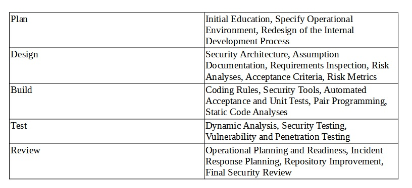
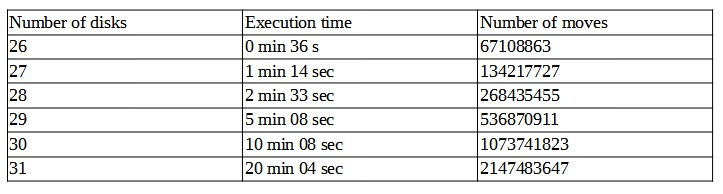
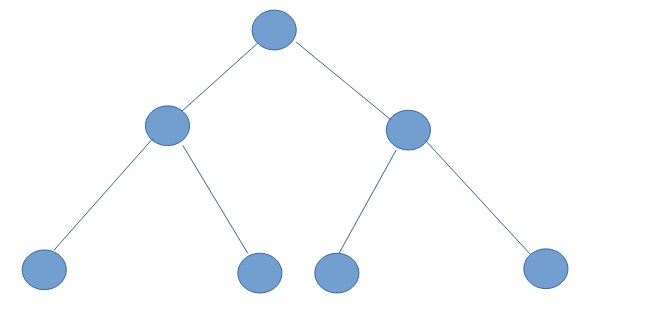
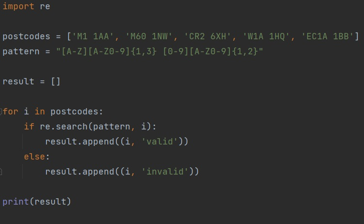
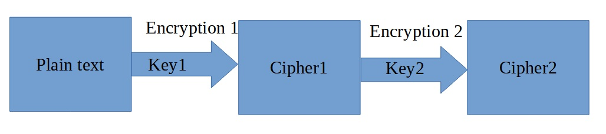
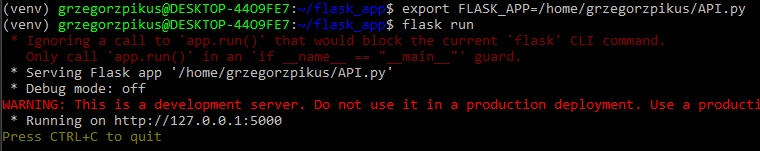
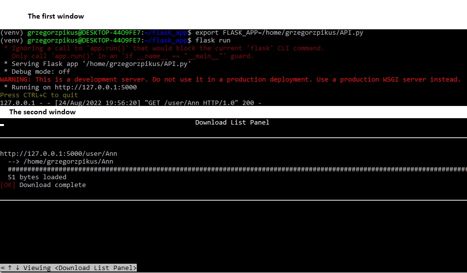
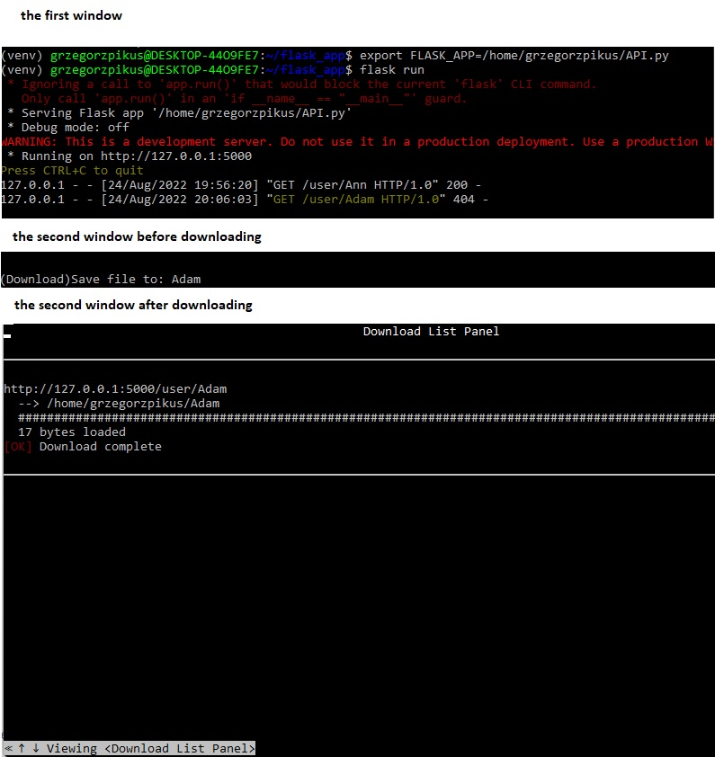

Seminar Preparation
The results of seminar preparation exercises.

The results of seminar preparation exercises.
Question 1:

A blog post:
There are three types of internal threats: 1) Accidental – where an individual may unknowingly expose a software/resources/a company to risk of malicious attacks. 2) negligent – where an individual knowingly omits some security standards, performs actions too quickly or and too carelessly having in mind that this may or may not cause harm. 3) Intentionally – an individual whose intention is to get an access and expose them externally sensitive data, make the system or a company vulnerable and/or allows for external attacks. To overcome such incidents on these three stages it may be rational to apply some security actions: a) Authentication – it would be a good practise to make employees to log in to the system with their personal credential. In my opinion it is an essential standard for software security. b) Confidentiality – if it is not necessary for an individual to have an access to some sensitive data, they should be blocked for such persons. Moreover c) Monitoring – the process that is dedicated of determining the status of system, process or an activity, would be really useful to collect actions made by individuals that can be saved and reviewed. This method would be useful to prevent intentional as well as unintentional actions that may expose the system/institution/data to the risk. e) Review – the periodical review of system security would be a good security practise to monitor actions that may be obsolete to keep the software/data/a company secured. f) Risk identification – keeping attention on the purpose of the business some secure solution might not be necessary and some of them essential. To determine which one should be applied, risk identification of risk assessment is an important part of security. Establishing vulnerable area can be helpful to apply some secure solutions and regulation that may potentially prevent malicious attacks or (un)intentional actions that my expose device/data/software to the risk.
2.1 Recursion
The code of Hanoi tower can be found in my repository on GitHub:
https://github.com/grzegorzpikus/SSD/blob/master/Recursion.py
The results, time execution and number of moves, can be found in the table below.

I found that it pointless to run the script until the stack overflow error is returned. This problem is based on recursion. So I had to find the limit of recursion execution. I check this by a sys library and a command sys.getrecursionlimit(). The value is 1000. Of course it can be changed (increased/decreased), but probably before the limit (1000) was reached, I would get a stack overflow error. This is a tree structure problem. Based on the table above we can clearly see that adding one disk increase both the number of moves and the time twice, to be precise n * 2 + 1 (except the first step).

Let’s assume the number of disks as N. The maximum of active functions that are called via recursion on one stack would be N+1. That is why in this case the maximum number of disks would be 1000 and I should get the stack overflow error. However, it it very likely that I would get this error earlier.
Stack overflow error is an error that happens when a computer tries to use more memory that was assigned to the task (the call stack). The size of the stack is usually defined. That is why if the software demands more memory this error occurs. If a program rises a stack overflow error, it is possible that it can be exposed and vulnerable to hacking. If an attacker overwrites the call stack, it is possible to insert a malicious code that may have an influence of the software.
Regex
The code of python program that validates postcodes can be found in my repository on GitHub:
https://github.com/grzegorzpikus/SSD/blob/master/Regex.py
In case of my solution I have a very strict pattern to look for, that limits the number of characters to maximum seven. This drastically decreases a number of possible combination and an evil regex attack should not be possible.

Testing with Python - the results of this exercise was summarized in the Codio section!
The code for this part can be found in my repository on GitHub:
https://github.com/grzegorzpikus/SSD/blob/master/Encryption/exercise.py
Q1: Why did you select the algorithm you chose?
I chose Transposition Cipher because as the author of the blog claims: “Cryptanalysts observed a significant improvement in crypto security when transposition technique is performed. They also noted that re-encrypting the cipher text using same transposition cipher creates better security.” Moreover I find this encryption algorithm easy to perform, moreover this can be done twice using two different keys for better security. Additionally the keys also can be stored in a secure way (for example as a plain text) and after modification – hash algorithm, convert it to a number.

Q2: Would it meet the GDPR regulations? Justify your answer.
In Act 5, chapter 1, part f of General Data Protection Regulation we can find that Personal data shall be: “processed in a manner that ensures appropriate security of the personal data, including protection against unauthorised or unlawful processing and against accidental loss, destruction or damage, using appropriate technical or organisational measures (‘integrity and confidentiality’).” protection in this context is also mentioned in: Art. 6 GDPR Lawfulness of processing Art. 32 GDPR Security of processing Art. 34 GDPR Communication of a personal data breach to the data subject.[1]
GDPR finds encryption as: “Encryption is the best way to protect data during transfer and one way to secure stored personal data.”. Even though, GDPR encourages organizations to use encryption for data protection, it does not give any recommendation about specific technical solutions that should be taken in this context. GDPR clearly says that the decision about the details regarding implementing encryption belongs to the controller of the data. However, the higher risk the stronger encrypting protection should be applied.[2] That is why, my answer for the question would be it can meet GDPR regulation, because it really depends on the nature of data management, what level of security should be used in encryption phase.
References:
[1] https://gdpr-info.eu/art-5-gdpr/
[2] https://gdpr-info.eu/issues/encryption/
To complete this part, I had to set a virtual environment for linux in Windows. Then I installed Ubuntu and and downloaded Python. After making sure that all necessary libraries are downloaded as well (including w3m, which is a command line web browser), I started doing the execise
I run the API script, that I saved in API.py file. Running API.py code caused that the local server was on. Next using command "w3m http://127.0.0.1:5000/user/Ann".

I initialized GET command and I could download a file.

Next, by typing http://127.0.0.1:5000/user/Adam I initialized GET command again and I could download a file again.

In this case the flask library allwed me to create a local server and to above actions.
Based on S. Fiore et al. (2019) "An Integrated Big and Fast Data Analytics Platform for Smart Urban Transportation Management" I wrote a description of the software that was created by my team:
Through an API or command line we created a CERN program that allows a user for authentication (log-in, sign-up). The software recognizes two type of users: a regular user (a user) and an administrator user (an admin). An admin can also get a list all registered users, delete a user account or upgrade a user account to an admin account. Moreover, within the software a user can manage CERN experiments that are securely stored in the database (the data are encrypted to protect them from unauthorised individuals). This actions are operated by CRUD (CREATE, READ, UPDATE, DELETE).